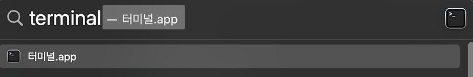

테크 · 기사 · 2026-11-28
맥북 오른쪽 커맨드키를 한영 전환키로 바꾸는 방법
터미널에서 hidutil 키 매핑 스크립트와 LaunchAgent를 등록해 오른쪽 커맨드키를 F18로 바꾼 뒤, 입력 소스 전환 단축키로 지정해 한영키처럼 쓰는 방법을 정리한 글이다.

- 작성자는 캡스락키로 한영 전환을 하다가 손이 잘 가지 않아 오른쪽 커맨드키를 한영키로 쓰기로 했다.
- Spotlight(command+스페이스)에서 터미널을 실행한 뒤 제시된 코드를 한 번에 복사해 붙여넣으면 된다.
- 코드는 오른쪽 커맨드키(0x7000000e7)를 F18(0x70000006d)로 매핑하는 hidutil 스크립트를 만들고, 부팅 시 자동 실행되도록 /Library/LaunchAgents에 plist를 등록한다.
- 실행 중 비밀번호를 요구하면 로그인 비밀번호를 입력하면 된다.
- 시스템 환경설정 > 키보드 > 키보드 단축키 > 입력소스 탭에서 '이전 입력소스 선택'을 클릭하고 오른쪽 command를 누르면 F18로 단축키가 지정된다.
- 비활성화하려면 launchctl remove로 설정을 해제하고 plist와 스크립트 파일을 sudo rm으로 삭제하면 된다.
본문에 나온 링크
- Apple PropertyList DTDhttp://www.apple.com/DTDs/PropertyList-1.0.dtd
- 원문: 맥북 오른쪽 커맨드키 한영키로 바꾸기https://juil.dev/mac-right-command-to-hangul/